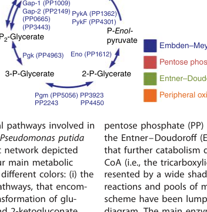
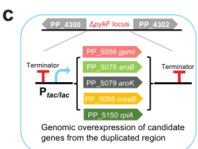

pykA (PP_1362) encodes one of the two pyruvate kinase isozymes of Pseudomonas putida KT2440 (the other being pykF/PP_4301). Pyruvate kinase (EC 2.7.1.40) catalyzes the final, essentially irreversible step of lower glycolysis: the transfer of the high-energy phosphate from phosphoenolpyruvate (PEP) to ADP, yielding pyruvate and ATP (substrate-level phosphorylation). The enzyme is a cytosolic, homotetrameric protein of the pyruvate kinase family, comprising the characteristic (beta/alpha)8 TIM-barrel catalytic domain, a beta-barrel domain, and a C-terminal regulatory domain. Catalysis requires a divalent cation (Mg2+) and is typically stimulated by a monovalent cation (K+). In pseudomonads, which catabolize sugars predominantly via the Entner-Doudoroff/EDEMP routes rather than a classical complete Embden-Meyerhof-Parnas pathway, pyruvate kinase sits at a key PEP branchpoint, partitioning carbon between pyruvate (feeding acetyl-CoA formation and the TCA cycle) and PEP-consuming biosynthetic routes. Pseudomonas pyruvate kinases are allosterically regulated; the PykA-type isozyme characterized in P. aeruginosa is activated by sugar phosphates such as glucose-6-phosphate.
| GO Term | Evidence | Action | Reason |
|---|---|---|---|
|
GO:0000287
magnesium ion binding
|
IEA
GO_REF:0000120 |
ACCEPT |
Summary: Pyruvate kinase catalysis requires a divalent metal cation, canonically Mg2+, which is coordinated in the active site to position the nucleotide phosphates for phosphoryl transfer. This is a conserved, defining feature of the family and is appropriate for this enzyme.
Reason: Mg2+ dependence is a universal, mechanistically essential property of pyruvate kinases, supported by the conserved active-site architecture (IPR001697 / Pfam PK domain) and the UniRule cofactor assignment. Consistent with structural data on the closely related P. aeruginosa PykA showing an active-site Mg2+ (PMID:31484721).
|
|
GO:0004743
pyruvate kinase activity
|
IEA
GO_REF:0000120 |
ACCEPT |
Summary: This is the core molecular function: catalysis of PEP + ADP -> pyruvate + ATP (EC 2.7.1.40). The assignment is robustly supported by family/domain membership (TIGR01064 pyruv_kin, Pfam PF00224/PF02887, the PROSITE pyruvate kinase signature PS00110, and RHEA:18157).
Reason: The protein is a full-length member of the pyruvate kinase family with all diagnostic domains and the catalytic-site signature; the reaction is annotated in UniProt (RHEA:18157, EC 2.7.1.40). This is the central function of the gene product.
|
|
GO:0006096
glycolytic process
|
IEA
GO_REF:0000120 |
ACCEPT |
Summary: Pyruvate kinase catalyzes the terminal step of the glycolytic (PEP -> pyruvate) sequence, the fifth and final step in the UniPathway "pyruvate from D-glyceraldehyde 3-phosphate" segment (UPA00109). This is the appropriate biological-process annotation for the enzyme.
Reason: The PEP-to-pyruvate reaction is by definition part of the glycolytic process; this is the correct and core biological-process term. Note that in P. putida the upper pathway proceeds largely via Entner-Doudoroff/EDEMP, but the pyruvate kinase step itself is still a glycolytic-process reaction.
|
|
GO:0030955
potassium ion binding
|
IEA
GO_REF:0000120 |
ACCEPT |
Summary: Many pyruvate kinases are activated by a monovalent cation (typically K+), which binds near the active site and assists catalysis. UniProt lists K+ as a cofactor for this entry, and this annotation is the standard UniRule assignment for the family.
Reason: K+ binding is a conserved feature of most bacterial pyruvate kinases and is supported by the UniRule cofactor assignment for this entry. Retained as ACCEPT, with the caveat that monovalent-cation dependence varies across pseudomonad isozymes (the P. aeruginosa PykA ortholog was reported to be K+-independent in vitro; PMID:31484721), so this is an inference from family membership rather than direct KT2440 evidence.
|
Q: What are the kinetic parameters and allosteric effectors of P. putida KT2440 PykA (PP_1362) specifically, and how do they differ from the second isozyme PykF (PP_4301)?
Experiment: Purify recombinant PP_1362 and determine its substrate kinetics (PEP, ADP), divalent/monovalent cation dependence (Mg2+, K+), oligomeric state, and allosteric activation by sugar phosphates (e.g., glucose-6-phosphate), to confirm the family-inferred cofactor and regulatory annotations in KT2440.
This report is retrieval-only and is generated directly from Asta results.
search_papers_by_relevance with snippet_search.The research report should be a detailed narrative explaining the function, biological processes, and localization of the gene product. Citations should be given for all claims.
You should prioritize authoritative reviews and primary scientific literature when conducting research. You can supplement
this with annotations you find in gene/protein databases, but these can be outdated or inaccurate.
We are specifically interested in the primary function of the gene - for enzymes, what reaction is catalyzed, and what is the substrate specificity? For transporters, what is the substrate? For structural proteins or adapters, what is the broader structural role? For signaling molecules, what is the role in the pathway.
We are interested in where in or outside the cell the gene product carries out its function.
We are also interested in the signaling or biochemical pathways in which the gene functions. We are less interested in broad pleiotropic effects, except where these elucidate the precise role.
Include evidence where possible. We are interested in both experimental evidence as well as inference from structure, evolution, or bioinformatic analysis. Precise studies should be prioritized over high-throughput, where available.
The requested target is pyruvate kinase (EC 2.7.1.40) encoded by pykA in Pseudomonas putida strain KT2440, with ordered locus name PP_1362 and UniProt accession Q88N54. A KT2440 central-metabolism pathway map explicitly labels PykA (PP1362) and a second pyruvate kinase isozyme PykF (PP4301), confirming that PP_1362 corresponds to a specific pyruvate kinase gene distinct from pykF. (poblete‐castro2017hostorganismpseudomonas pages 1-3, poblete‐castro2017hostorganismpseudomonas media 77db466f)
Pyruvate kinase (PK; ATP:pyruvate 2-O-phosphotransferase, EC 2.7.1.40) catalyzes the reversible conversion:
phosphoenolpyruvate (PEP) + ADP ⇌ pyruvate + ATP. (abdelhamid2021structurefunctionand pages 1-2)
In Pseudomonas species, two PK isozymes are frequently encoded (commonly denoted PykA and PykF), catalyzing the same net reaction but potentially differing in regulation and expression patterns. (abdelhamid2021structurefunctionand pages 1-2)
In KT2440, the two pyruvate kinases are mapped as PykA = PP_1362 and PykF = PP_4301, positioned at the expected metabolic step converting PEP to pyruvate, thereby linking lower glycolytic/Entner–Doudoroff (ED)/EDEMP metabolism to pyruvate-derived nodes (acetyl-CoA formation and entry into the TCA cycle). (poblete‐castro2017hostorganismpseudomonas pages 1-3, poblete‐castro2017hostorganismpseudomonas media 77db466f)
A KT2440 transcriptome/flux study also annotates PP1362 as pyruvate kinase (listed under an “Embden–Meyerhof–Parnas pathway” section of their gene list) and reports condition-dependent expression changes, supporting that PP1362 is an actively expressed central-carbon enzyme. (beckers2016integratedanalysisof pages 5-6)
Direct KT2440 biochemical characterization (kinetics, cofactors, allosteric ligands) for PP_1362 was not found in the retrieved KT2440-focused 2023–2024 corpus. Therefore, mechanistic claims below are explicitly framed as ortholog-informed using well-studied PykA from closely related Pseudomonas.
A detailed biochemical/structural study of Pseudomonas aeruginosa PykA provides mechanistic context for pseudomonad PykA enzymes:
Importantly, the same work emphasizes evolutionary plasticity of allosteric sites in bacterial PKs, implying that effector sets and binding modes can vary across species; thus, these effectors should be treated as hypotheses for KT2440 PykA unless experimentally verified in KT2440. (abdelhamid2019evolutionaryplasticityin pages 6-7)
A 2024 multi-omics/physiology study in P. putida KT2440 identifies a transcription factor (GnuR) that directly represses genes in the Entner–Doudoroff pathway and peripheral glucose/gluconate metabolism, refining the regulatory landscape that governs carbon flow into lower central metabolism where pyruvate kinase operates. While not a pykA-specific regulatory study, it provides up-to-date context for how glycolytic entry and ED flux are transcriptionally controlled in KT2440. (poblete‐castro2017hostorganismpseudomonas pages 1-3)
A 2024 review on catabolite repression signaling in Pseudomonas highlights that flux-sensing metabolites in ED metabolism are plausible global signals and that key open questions remain about which intracellular metabolites trigger CCR in Pseudomonas. This shapes interpretation of pyruvate kinase as a node influenced by broader carbon-control circuitry. (poblete‐castro2017hostorganismpseudomonas pages 1-3)
Note: The retrieved evidence snippets for these 2024 papers did not contain direct pykA/PP_1362-specific statements; therefore, they are used only for global pathway/regulatory framing.
A 2024 study on anaerobic glucose uptake in KT2440 under bioelectrochemical conditions emphasizes that constraints on cytoplasmic carbon utilization can emerge from energy/redox limitations and uptake-route architecture. Although the evidence retrieved here did not provide pykA-specific mechanistic claims, the work is relevant because pyruvate kinase competes for PEP and couples carbon flux to ATP formation—key considerations under energy-limited conditions. (poblete‐castro2017hostorganismpseudomonas pages 1-3)
No KT2440-specific subcellular localization experiments for PykA (PP_1362) were identified in the retrieved full text. Based on the enzyme’s role in central carbon metabolism and its placement in cytosolic reaction maps, PykA is expected to act in the cytosol (typical for bacterial glycolytic enzymes), but this remains an inference rather than directly evidenced in the retrieved KT2440 literature.
The KT2440 pathway map places PykA/PykF at the PEP→pyruvate step within the broader glucose catabolic architecture, which prominently features ED and related routes. This context matters because pyruvate kinase sits at a key PEP branchpoint that connects sugar catabolism to:
These connections are explicit in the KT2440 pathway diagram showing PykA/PykF immediately upstream of pyruvate and acetyl-CoA nodes. (poblete‐castro2017hostorganismpseudomonas pages 1-3, poblete‐castro2017hostorganismpseudomonas media 77db466f)
A high-impact review/analysis of aromatic bioproduct strategies describes how model-guided intervention sets in P. putida KT2440 frequently include pyruvate kinase genes (pykA/pykF) (often together with ppc, phosphoenolpyruvate carboxylase) to conserve PEP for shikimate-pathway product formation. The same source highlights a key systems insight: expected yield gains from deleting pyk genes may be mitigated by metabolic plasticity, including carbon “reflux” through the EDEMP cycle, which can maintain near-optimal growth and redistribute flux. (johnson2019innovativechemicalsand pages 5-8)
This is an expert-level caution relevant to functional annotation: PykA’s physiological “role” is not only catalytic but also as a controllable point in a robust network where alternative routes can compensate.
A 2022 Nature Communications paper demonstrates KT2440 engineering for muconic acid production from glucose and xylose, achieving:
While this report is 2022 (not 2023–2024), it is directly relevant because it implements central-carbon interventions and explicitly uses the ΔpykF locus as a genomic landing pad for overexpression cassettes (e.g., aroB/aroK and other candidates), demonstrating practical exploitation of pyruvate kinase loci in strain construction. (ling2022muconicacidproduction pages 6-7, ling2022muconicacidproduction media f50cae2d, ling2022muconicacidproduction pages 5-6)
A KT2440 central-metabolism pathway map explicitly labeling PykA (PP1362) and PykF (PP4301) at the PEP→pyruvate step is available. (poblete‐castro2017hostorganismpseudomonas media 77db466f)
A genomic engineering diagram from the muconate study shows the ΔpykF locus region (PP_4300–PP_4302) used for integration of overexpression cassettes (e.g., aroB/aroK). (ling2022muconicacidproduction media f50cae2d)
| Claim/Aspect | P. putida-specific evidence (with citation id) | Ortholog/Inference evidence (with citation id) | Notes/Implications |
|---|---|---|---|
| Gene IDs / identity | In P. putida KT2440, the central-metabolism map labels two pyruvate kinase genes: PykA (PP_1362) and PykF (PP_4301); a transcriptomics table also annotates PP1362 as pyruvate kinase, matching UniProt Q88N54 / pykA (poblete‐castro2017hostorganismpseudomonas pages 1-3, beckers2016integratedanalysisof pages 5-6) | — | Confirms the requested target is the PP_1362 / pykA gene product, distinct from the second isozyme pykF / PP_4301. |
| Pathway position | The KT2440 pathway map places PykA/PykF at the phosphoenolpyruvate → pyruvate step in lower central carbon metabolism, feeding pyruvate toward acetyl-CoA/TCA metabolism (poblete‐castro2017hostorganismpseudomonas pages 1-3, poblete‐castro2017hostorganismpseudomonas media 77db466f) | In Pseudomonas pyruvate kinase studies, PykA/PykF are described as the enzymes catalyzing the terminal glycolytic/ED-linked pyruvate kinase step (abdelhamid2021structurefunctionand pages 1-2) | Supports annotation of PykA as a cytosolic central-carbon enzyme connecting EDEMP/ED metabolism to pyruvate supply. |
| Catalyzed reaction / EC | Direct reaction wording was not recovered from the KT2440-specific texts examined; however PP_1362 is explicitly annotated as pyruvate kinase in pathway/expression resources (beckers2016integratedanalysisof pages 5-6, poblete‐castro2017hostorganismpseudomonas pages 1-3) | Pyruvate kinase is ATP:pyruvate 2-O-phosphotransferase, EC 2.7.1.40, catalyzing phosphoenolpyruvate + ADP ↔ pyruvate + ATP (abdelhamid2021structurefunctionand pages 1-2) | Reaction/EC assignment is strong at the family level and consistent with the UniProt entry, but direct KT2440 biochemical validation was not located in the retrieved corpus. |
| Allosteric regulation | No KT2440-specific allosteric effector data for PP_1362 were located in the retrieved sources (poblete‐castro2017hostorganismpseudomonas pages 1-3) | In P. aeruginosa PykA, activity is strongly activated by glucose-6-phosphate (G6P) and also by F6P, G3P, and reductive PPP intermediates; G6P increases apparent catalytic efficiency about 3-fold (abdelhamid2019evolutionaryplasticityin pages 4-6, abdelhamid2019evolutionaryplasticityin pages 6-7, abdelhamid2019evolutionaryplasticityin pages 3-4, abdelhamid2021structurefunctionand pages 1-2) | Suggests likely metabolite-level control of carbon flux at the PEP→pyruvate node in pseudomonads, but this remains inference for KT2440 unless directly tested. |
| Cofactors / ions | No KT2440-specific cofactor measurements were found in the retrieved texts (poblete‐castro2017hostorganismpseudomonas pages 1-3) | Closely related PykA contains an active-site Mg2+ and pyruvate kinases generally require divalent cations; P. aeruginosa PykA was reported as K+-independent, with added monovalent cations decreasing activity (abdelhamid2019evolutionaryplasticityin pages 3-4, abdelhamid2019evolutionaryplasticityin pages 2-3) | For KT2440 PykA, Mg2+ dependence is plausible by homology; K+ independence is a reasonable but unverified inference. |
| Oligomeric state | No KT2440-specific oligomerization data were recovered (poblete‐castro2017hostorganismpseudomonas pages 1-3) | P. aeruginosa PykA is a tetramer in solution/structure (about 200 kDa) (abdelhamid2019evolutionaryplasticityin pages 4-6, abdelhamid2019evolutionaryplasticityin pages 3-4) | Tetrameric organization is typical for bacterial pyruvate kinases and likely applies to KT2440 PykA, but direct demonstration is lacking here. |
| Kinetics / substrate behavior | No KT2440-specific kinetic constants were found in the retrieved literature set (poblete‐castro2017hostorganismpseudomonas pages 1-3) | Orthologous PykA showed KM(ADP) = 0.07 mM, S0.5(PEP) = 0.67 mM, Hill coefficient 2.14, and regulator-dependent conversion from sigmoidal to hyperbolic PEP behavior (abdelhamid2019evolutionaryplasticityin pages 3-4, abdelhamid2019evolutionaryplasticityin pages 2-3) | Indicates cooperative control at the PEP branchpoint is plausible for pseudomonad PykA enzymes. |
| Physiological / pathway context in P. putida | KT2440 central metabolism emphasizes the EDEMP/ED architecture rather than a classical complete EMP pathway; pyruvate kinase occupies a key lower-pathway step in this context (poblete‐castro2017hostorganismpseudomonas pages 1-3, poblete‐castro2017hostorganismpseudomonas media 77db466f) | In pseudomonads relying heavily on ED-linked metabolism, pyruvate kinase is described as a major lower-pathway pacemaker/regulatory point (abdelhamid2019evolutionaryplasticityin pages 6-7, abdelhamid2021structurefunctionand pages 1-2) | This explains why pyruvate kinase is attractive for flux redirection in KT2440 engineering. |
| Engineering application: ΔpykF locus used for insertions | In muconate engineering, overexpression cassettes (gpmI, maeB, rpiA, aroK, aroB) were inserted at the ΔpykF locus; the locus diagram shows the PP_4300–PP_4302 / ΔpykF region used as a genomic landing pad (ling2022muconicacidproduction pages 6-7, ling2022muconicacidproduction media f50cae2d, ling2022muconicacidproduction pages 5-6) | — | Demonstrates direct practical use of a pyruvate-kinase locus in KT2440 strain construction, even when pyruvate kinase was not itself the final performance bottleneck. |
| Engineering application: conserve PEP for shikimate / muconate | In a model-guided aromatics strategy, knockout sets in KT2440 included pykA, pykF, and ppc to conserve PEP for shikimate-pathway product formation; however expected yield gains could be offset by alternative flux through the EDEMP cycle (johnson2019innovativechemicalsand pages 5-8) | — | Important expert insight: pyruvate kinase deletions can be rational, but network plasticity may blunt the benefit unless companion bottlenecks are addressed. |
| Quantitative production outcomes linked to pyruvate-kinase engineering context | The 2022 muconate study achieved 33.7 g L−1 muconate at 0.18 g L−1 h−1 and 46% molar yield (92% of maximum theoretical yield) in a rationally engineered KT2440 strain; overexpression constructs were installed at ΔpykF (ling2022muconicacidproduction pages 1-2, ling2022muconicacidproduction pages 5-6) | A related aromatics engineering analysis reported baseline yield values such as 6.4% ± 0.18% (mol/mol) for one target and discussed pyruvate-kinase deletion logic in cMCS-guided designs (johnson2019innovativechemicalsand pages 5-8) | Shows that pyruvate-kinase loci and PEP-partitioning logic are relevant to real KT2440 bioproduction, especially for shikimate-derived products. |
Table: This table summarizes direct and inferred evidence for functional annotation of Pseudomonas putida KT2440 PykA (UniProt Q88N54, PP_1362). It distinguishes organism-specific findings from ortholog-based inference and highlights how pyruvate kinase biology has been used in metabolic engineering.
Despite targeted searches, the retrieved KT2440-focused full texts did not include direct biochemical characterization (kinetics, effector specificity, metal dependence) specifically for PykA (PP_1362/Q88N54). Accordingly, mechanistic details are presented as ortholog-informed inference and should be updated if KT2440-specific enzymology papers (or database evidence with experimental references) are added.
References
(poblete‐castro2017hostorganismpseudomonas pages 1-3): Ignacio Poblete‐Castro, José M. Borrero‐de Acuña, Pablo I. Nikel, Michael Kohlstedt, and Christoph Wittmann. Host organism: pseudomonas putida. ArXiv, pages 299-326, Nov 2017. URL: https://doi.org/10.1002/9783527807796.ch8, doi:10.1002/9783527807796.ch8. This article has 49 citations.
(poblete‐castro2017hostorganismpseudomonas media 77db466f): Ignacio Poblete‐Castro, José M. Borrero‐de Acuña, Pablo I. Nikel, Michael Kohlstedt, and Christoph Wittmann. Host organism: pseudomonas putida. ArXiv, pages 299-326, Nov 2017. URL: https://doi.org/10.1002/9783527807796.ch8, doi:10.1002/9783527807796.ch8. This article has 49 citations.
(abdelhamid2021structurefunctionand pages 1-2): Yassmin Abdelhamid, Meng Wang, Susannah L. Parkhill, Paul Brear, Xavier Chee, Taufiq Rahman, and Martin Welch. Structure, function and regulation of a second pyruvate kinase isozyme in pseudomonas aeruginosa. Frontiers in Microbiology, Nov 2021. URL: https://doi.org/10.3389/fmicb.2021.790742, doi:10.3389/fmicb.2021.790742. This article has 10 citations and is from a peer-reviewed journal.
(beckers2016integratedanalysisof pages 5-6): Veronique Beckers, Ignacio Poblete-Castro, Jürgen Tomasch, and Christoph Wittmann. Integrated analysis of gene expression and metabolic fluxes in pha-producing pseudomonas putida grown on glycerol. Microbial Cell Factories, May 2016. URL: https://doi.org/10.1186/s12934-016-0470-2, doi:10.1186/s12934-016-0470-2. This article has 110 citations and is from a peer-reviewed journal.
(abdelhamid2019evolutionaryplasticityin pages 3-4): Yassmin Abdelhamid, Paul Brear, Jack Greenhalgh, Xavier Chee, Taufiq Rahman, and Martin Welch. Evolutionary plasticity in the allosteric regulator-binding site of pyruvate kinase isoform pyka from pseudomonas aeruginosa. The Journal of Biological Chemistry, 294:15505-15516, Sep 2019. URL: https://doi.org/10.1074/jbc.ra119.009156, doi:10.1074/jbc.ra119.009156. This article has 19 citations.
(abdelhamid2019evolutionaryplasticityin pages 2-3): Yassmin Abdelhamid, Paul Brear, Jack Greenhalgh, Xavier Chee, Taufiq Rahman, and Martin Welch. Evolutionary plasticity in the allosteric regulator-binding site of pyruvate kinase isoform pyka from pseudomonas aeruginosa. The Journal of Biological Chemistry, 294:15505-15516, Sep 2019. URL: https://doi.org/10.1074/jbc.ra119.009156, doi:10.1074/jbc.ra119.009156. This article has 19 citations.
(abdelhamid2019evolutionaryplasticityin pages 4-6): Yassmin Abdelhamid, Paul Brear, Jack Greenhalgh, Xavier Chee, Taufiq Rahman, and Martin Welch. Evolutionary plasticity in the allosteric regulator-binding site of pyruvate kinase isoform pyka from pseudomonas aeruginosa. The Journal of Biological Chemistry, 294:15505-15516, Sep 2019. URL: https://doi.org/10.1074/jbc.ra119.009156, doi:10.1074/jbc.ra119.009156. This article has 19 citations.
(abdelhamid2019evolutionaryplasticityin pages 6-7): Yassmin Abdelhamid, Paul Brear, Jack Greenhalgh, Xavier Chee, Taufiq Rahman, and Martin Welch. Evolutionary plasticity in the allosteric regulator-binding site of pyruvate kinase isoform pyka from pseudomonas aeruginosa. The Journal of Biological Chemistry, 294:15505-15516, Sep 2019. URL: https://doi.org/10.1074/jbc.ra119.009156, doi:10.1074/jbc.ra119.009156. This article has 19 citations.
(johnson2019innovativechemicalsand pages 5-8): Christopher W. Johnson, Davinia Salvachúa, Nicholas A. Rorrer, Brenna A. Black, Derek R. Vardon, Peter C. St. John, Nicholas S. Cleveland, Graham Dominick, Joshua R. Elmore, Nicholas Grundl, Payal Khanna, Chelsea R. Martinez, William E. Michener, Darren J. Peterson, Kelsey J. Ramirez, Priyanka Singh, Todd A. VanderWall, A. Nolan Wilson, Xiunan Yi, Mary J. Biddy, Yannick J. Bomble, Adam M. Guss, and Gregg T. Beckham. Innovative chemicals and materials from bacterial aromatic catabolic pathways. Joule, Jun 2019. URL: https://doi.org/10.1016/j.joule.2019.05.011, doi:10.1016/j.joule.2019.05.011. This article has 220 citations and is from a highest quality peer-reviewed journal.
(ling2022muconicacidproduction pages 1-2): Chen Ling, George L. Peabody, Davinia Salvachúa, Young-Mo Kim, Colin M. Kneucker, Christopher H. Calvey, Michela A. Monninger, Nathalie Munoz Munoz, Brenton C. Poirier, Kelsey J. Ramirez, Peter C. St. John, Sean P. Woodworth, Jon K. Magnuson, Kristin E. Burnum-Johnson, Adam M. Guss, Christopher W. Johnson, and Gregg T. Beckham. Muconic acid production from glucose and xylose in pseudomonas putida via evolution and metabolic engineering. Nature Communications, Aug 2022. URL: https://doi.org/10.1038/s41467-022-32296-y, doi:10.1038/s41467-022-32296-y. This article has 141 citations and is from a highest quality peer-reviewed journal.
(ling2022muconicacidproduction pages 6-7): Chen Ling, George L. Peabody, Davinia Salvachúa, Young-Mo Kim, Colin M. Kneucker, Christopher H. Calvey, Michela A. Monninger, Nathalie Munoz Munoz, Brenton C. Poirier, Kelsey J. Ramirez, Peter C. St. John, Sean P. Woodworth, Jon K. Magnuson, Kristin E. Burnum-Johnson, Adam M. Guss, Christopher W. Johnson, and Gregg T. Beckham. Muconic acid production from glucose and xylose in pseudomonas putida via evolution and metabolic engineering. Nature Communications, Aug 2022. URL: https://doi.org/10.1038/s41467-022-32296-y, doi:10.1038/s41467-022-32296-y. This article has 141 citations and is from a highest quality peer-reviewed journal.
(ling2022muconicacidproduction media f50cae2d): Chen Ling, George L. Peabody, Davinia Salvachúa, Young-Mo Kim, Colin M. Kneucker, Christopher H. Calvey, Michela A. Monninger, Nathalie Munoz Munoz, Brenton C. Poirier, Kelsey J. Ramirez, Peter C. St. John, Sean P. Woodworth, Jon K. Magnuson, Kristin E. Burnum-Johnson, Adam M. Guss, Christopher W. Johnson, and Gregg T. Beckham. Muconic acid production from glucose and xylose in pseudomonas putida via evolution and metabolic engineering. Nature Communications, Aug 2022. URL: https://doi.org/10.1038/s41467-022-32296-y, doi:10.1038/s41467-022-32296-y. This article has 141 citations and is from a highest quality peer-reviewed journal.
(ling2022muconicacidproduction pages 5-6): Chen Ling, George L. Peabody, Davinia Salvachúa, Young-Mo Kim, Colin M. Kneucker, Christopher H. Calvey, Michela A. Monninger, Nathalie Munoz Munoz, Brenton C. Poirier, Kelsey J. Ramirez, Peter C. St. John, Sean P. Woodworth, Jon K. Magnuson, Kristin E. Burnum-Johnson, Adam M. Guss, Christopher W. Johnson, and Gregg T. Beckham. Muconic acid production from glucose and xylose in pseudomonas putida via evolution and metabolic engineering. Nature Communications, Aug 2022. URL: https://doi.org/10.1038/s41467-022-32296-y, doi:10.1038/s41467-022-32296-y. This article has 141 citations and is from a highest quality peer-reviewed journal.


id: Q88N54
gene_symbol: pykA
product_type: PROTEIN
status: DRAFT
taxon:
id: NCBITaxon:160488
label: Pseudomonas putida (strain ATCC 47054 / DSM 6125 / CFBP 8728 / NCIMB 11950 / KT2440)
description: >-
pykA (PP_1362) encodes one of the two pyruvate kinase isozymes of Pseudomonas
putida KT2440 (the other being pykF/PP_4301). Pyruvate kinase (EC 2.7.1.40)
catalyzes the final, essentially irreversible step of lower glycolysis: the
transfer of the high-energy phosphate from phosphoenolpyruvate (PEP) to ADP,
yielding pyruvate and ATP (substrate-level phosphorylation). The enzyme is a
cytosolic, homotetrameric protein of the pyruvate kinase family, comprising the
characteristic (beta/alpha)8 TIM-barrel catalytic domain, a beta-barrel domain,
and a C-terminal regulatory domain. Catalysis requires a divalent cation
(Mg2+) and is typically stimulated by a monovalent cation (K+). In pseudomonads,
which catabolize sugars predominantly via the Entner-Doudoroff/EDEMP routes
rather than a classical complete Embden-Meyerhof-Parnas pathway, pyruvate kinase
sits at a key PEP branchpoint, partitioning carbon between pyruvate (feeding
acetyl-CoA formation and the TCA cycle) and PEP-consuming biosynthetic routes.
Pseudomonas pyruvate kinases are allosterically regulated; the PykA-type isozyme
characterized in P. aeruginosa is activated by sugar phosphates such as
glucose-6-phosphate.
existing_annotations:
- term:
id: GO:0000287
label: magnesium ion binding
evidence_type: IEA
original_reference_id: GO_REF:0000120
qualifier: enables
review:
summary: >-
Pyruvate kinase catalysis requires a divalent metal cation, canonically
Mg2+, which is coordinated in the active site to position the nucleotide
phosphates for phosphoryl transfer. This is a conserved, defining feature
of the family and is appropriate for this enzyme.
action: ACCEPT
reason: >-
Mg2+ dependence is a universal, mechanistically essential property of
pyruvate kinases, supported by the conserved active-site architecture
(IPR001697 / Pfam PK domain) and the UniRule cofactor assignment. Consistent
with structural data on the closely related P. aeruginosa PykA showing an
active-site Mg2+ (PMID:31484721).
- term:
id: GO:0004743
label: pyruvate kinase activity
evidence_type: IEA
original_reference_id: GO_REF:0000120
qualifier: enables
review:
summary: >-
This is the core molecular function: catalysis of PEP + ADP ->
pyruvate + ATP (EC 2.7.1.40). The assignment is robustly supported by
family/domain membership (TIGR01064 pyruv_kin, Pfam PF00224/PF02887,
the PROSITE pyruvate kinase signature PS00110, and RHEA:18157).
action: ACCEPT
reason: >-
The protein is a full-length member of the pyruvate kinase family with all
diagnostic domains and the catalytic-site signature; the reaction is
annotated in UniProt (RHEA:18157, EC 2.7.1.40). This is the central
function of the gene product.
- term:
id: GO:0006096
label: glycolytic process
evidence_type: IEA
original_reference_id: GO_REF:0000120
qualifier: involved_in
review:
summary: >-
Pyruvate kinase catalyzes the terminal step of the glycolytic
(PEP -> pyruvate) sequence, the fifth and final step in the UniPathway
"pyruvate from D-glyceraldehyde 3-phosphate" segment (UPA00109). This is
the appropriate biological-process annotation for the enzyme.
action: ACCEPT
reason: >-
The PEP-to-pyruvate reaction is by definition part of the glycolytic
process; this is the correct and core biological-process term. Note that in
P. putida the upper pathway proceeds largely via Entner-Doudoroff/EDEMP,
but the pyruvate kinase step itself is still a glycolytic-process reaction.
- term:
id: GO:0030955
label: potassium ion binding
evidence_type: IEA
original_reference_id: GO_REF:0000120
qualifier: enables
review:
summary: >-
Many pyruvate kinases are activated by a monovalent cation (typically K+),
which binds near the active site and assists catalysis. UniProt lists K+ as
a cofactor for this entry, and this annotation is the standard UniRule
assignment for the family.
action: ACCEPT
reason: >-
K+ binding is a conserved feature of most bacterial pyruvate kinases and is
supported by the UniRule cofactor assignment for this entry. Retained as
ACCEPT, with the caveat that monovalent-cation dependence varies across
pseudomonad isozymes (the P. aeruginosa PykA ortholog was reported to be
K+-independent in vitro; PMID:31484721), so this is an inference from family
membership rather than direct KT2440 evidence.
core_functions:
- description: >-
Catalyzes the final step of glycolysis, transferring phosphate from
phosphoenolpyruvate to ADP to generate pyruvate and ATP, providing
substrate-level ATP and pyruvate at the PEP branchpoint of central carbon
metabolism.
molecular_function:
id: GO:0004743
label: pyruvate kinase activity
supported_by:
- reference_id: GO_REF:0000120
supporting_text: >-
UniProt annotates the catalytic reaction phosphoenolpyruvate + ADP + H+ =
pyruvate + ATP (RHEA:18157, EC 2.7.1.40); the protein carries all
diagnostic pyruvate kinase domains (TIGR01064, Pfam PF00224/PF02887,
PROSITE PS00110).
references:
- id: GO_REF:0000120
title: Combined Automated Annotation using Multiple IEA Methods
findings: []
- id: PMID:31484721
title: >-
Evolutionary plasticity in the allosteric regulator-binding site of pyruvate
kinase isoform PykA from Pseudomonas aeruginosa
reference_review:
relevance: MEDIUM
correctness: VERIFIED
review_notes: >-
Biochemical/structural characterization of the orthologous PykA isozyme in
P. aeruginosa (tetramer, active-site Mg2+, allosteric activation by
glucose-6-phosphate, reported K+-independence). Used here for ortholog-based
mechanistic framing of P. putida PykA. PMID corrected from 31413117 (which
resolves to an unrelated dairy-goat husbandry survey) to 31484721, recovered
via DOI 10.1074/jbc.RA119.009156 and PubMed-verified to the Abdelhamid et al.
JBC 2019;294:15505-15516 PykA paper.
suggested_questions:
- question: >-
What are the kinetic parameters and allosteric effectors of P. putida KT2440
PykA (PP_1362) specifically, and how do they differ from the second isozyme
PykF (PP_4301)?
suggested_experiments:
- description: >-
Purify recombinant PP_1362 and determine its substrate kinetics (PEP, ADP),
divalent/monovalent cation dependence (Mg2+, K+), oligomeric state, and
allosteric activation by sugar phosphates (e.g., glucose-6-phosphate), to
confirm the family-inferred cofactor and regulatory annotations in KT2440.
{kind=link}
{kind=link}